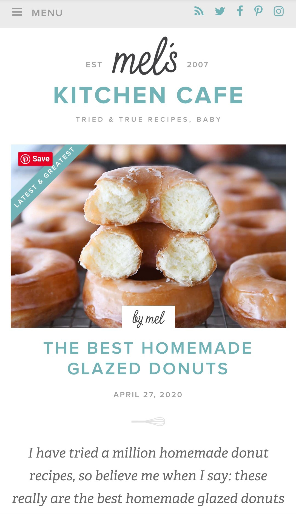
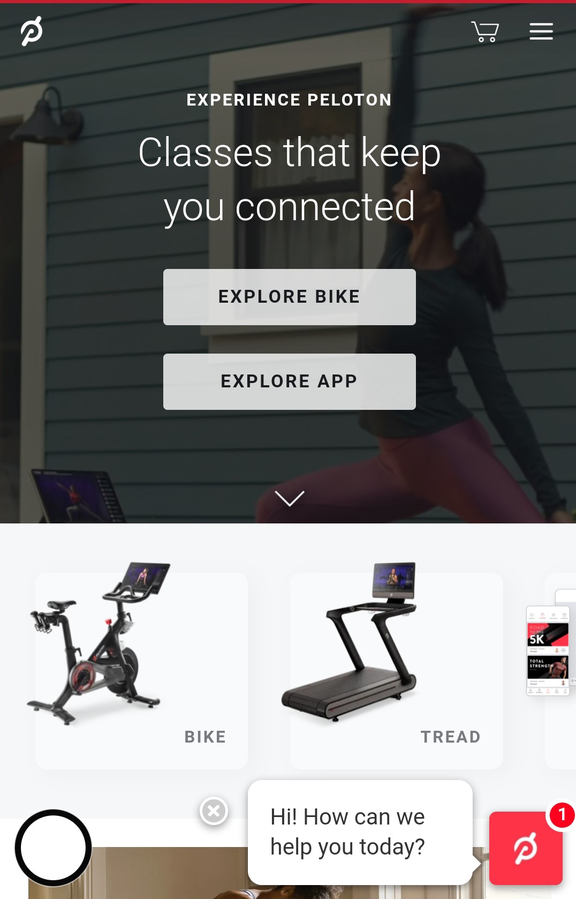

Rule of Thirds
Gabb Wireless
This is site is a great example of the "Rule of Thirds" in design. The image is draws the eyes of the individuals on the top, one-third, horizontal line. On the verical line the two individuals are placed between the one-third and two-third lines.
Whitespace with Clean Design
Mels Kitchen Cafe
Mel has created a site that has contrast of colors to make images pop, by having a clean, white, background. Her site is very simple giving the users the opportunity to easily access and navigate through.
Visual Hierarchy
Peleton
When Pelotons site first uploads the eyes are drawn immediately to the background image. Then they move forward to the call of action to "Explore Bike" and "Explore App" buttons. After which the tag phrases and the images of the treadmill and bike are noticed.